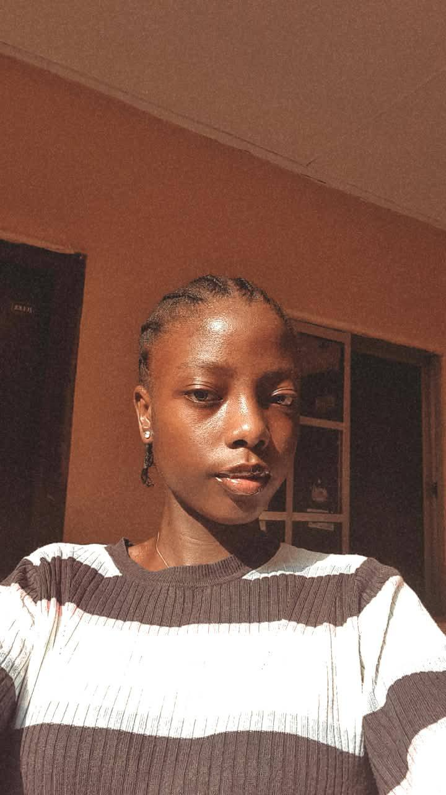

Video Editing
Cut, grade and pace stories that feel like cinema, not ads.
Abati Favour Oluwajimisayo

02 — About me
A creative and digital storyteller passionate about using visuals and content to communicate ideas, tell stories and connect with people.
My work sits at the intersection of visual storytelling and digital media. I create and edit videos, develop content ideas, and manage social media, helping brands build their online presence, reach their audience and create content that gets noticed.
I create because I believe a good idea deserves to be seen, felt and remembered.
03 — Services
Cut, grade and pace stories that feel like cinema, not ads.
Presence, posting and a feed that actually gets noticed.
Ideas and plans built to be seen, felt and remembered.
From concept to post — visuals that land with the audience.
Frames, feeling, and the line that holds it together.
Shoot the moment so it still feels alive on screen.
Talk with the people who show up — and keep them close.
Calm, clear, on-brand communication when it matters.
04 — My work
Hit play. These are the videos — recaps, content and cinema — hosted on this site.
05 — Let’s make something
Collabs, brands and briefs — say hello.